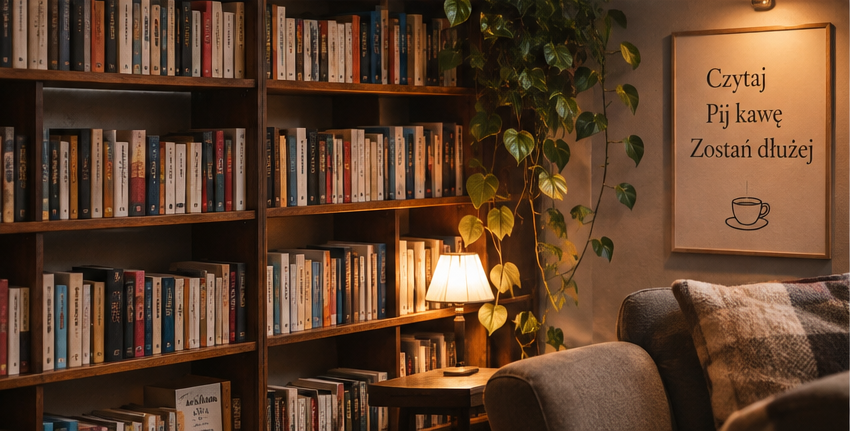

Książka na każdą porę dnia — znajdź historię idealną dla siebie
Hanna Wierzbicka · · 5 min czytania

Niektóre książki smakują najlepiej z porannym espresso. Inne potrzebują deszczowego popołudnia, miękkiego fotela i kubka gorącej herbaty. Są też historie, które zostają z nami na długo po zgaszeniu nocnej lampki. Jak znaleźć tę idealną?
W MARGINESIE wierzymy, że czytanie to coś więcej niż przewracanie kolejnych stron. To mały rytuał, który pozwala na chwilę zatrzymać codzienność.
Czasami wystarczy dobra kawa, wygodne miejsce i książka, od której trudno się oderwać. Nie trzeba planować wielogodzinnej lektury — nawet kilkanaście minut spędzonych z dobrą historią potrafi odmienić dzień.
Przygotowaliśmy kilka inspiracji na różne momenty dnia. Być może właśnie tutaj znajdziesz swoją kolejną ulubioną lekturę.
Poranek z kawą i książką, która inspiruje ☕
Poranki mają w sobie coś wyjątkowego. Miasto powoli budzi się do życia, z ekspresu unosi się zapach świeżo mielonych ziaren, a przed nami jeszcze cały dzień możliwości.
To idealny moment na książki, które pobudzają wyobraźnię, inspirują i zostawiają nas z ciekawą myślą. Takie, do których wracamy myślami jeszcze długo po odłożeniu filiżanki.
Nasza propozycja: „Zanim wystygnie kawa”
Toshikazu Kawaguchi zabiera nas do niezwykłej kawiarni w Tokio, w której goście mogą na chwilę cofnąć się w czasie.
To ciepła, refleksyjna opowieść o relacjach, niewypowiedzianych słowach i chwilach, których nie da się odzyskać.
Trudno wyobrazić sobie lepszą książkę do czytania przy aromatycznej kawie.
Odkryj książki w naszym sklepie →Deszczowe popołudnie? Czas na historię, w której można się zgubić
Są takie dni, kiedy najlepszym planem jest brak planów. Deszcz stuka o szyby, ulubiona kawa stygnie na stoliku, a my przenosimy się do zupełnie innego świata.
W takie popołudnia najlepiej sprawdzają się powieści z wyjątkowym klimatem, pełne emocji, tajemnic i bohaterów, z którymi trudno się rozstać.

Czasem do szczęścia wystarczy wygodny fotel i dobra książka.
Nasza propozycja: „Cień wiatru”
Carlos Ruiz Zafón przenosi czytelników do tajemniczej Barcelony, gdzie książki skrywają niezwykłe historie, a przeszłość nie pozwala o sobie zapomnieć.
To powieść pełna sekretów, literackich zagadek i niezapomnianej atmosfery.
Jeżeli kochasz księgarnie, zapach papieru i historie o sile literatury, ta książka może skraść Twoje serce.
Zobacz naszą kolekcję książek →Wieczór tylko dla siebie 🌙
Po intensywnym dniu warto znaleźć chwilę, która należy wyłącznie do nas. Bez powiadomień, pośpiechu i niekończącej się listy obowiązków.
Wieczorna lektura może stać się małym rytuałem wyciszenia. Ciepłe światło lampki, ulubiony koc i kilka stron dobrej książki potrafią zmienić zwyczajny wieczór w coś wyjątkowego.
Nasza propozycja: „Małe życie”
Hanya Yanagihara stworzyła poruszającą powieść o przyjaźni, bliskości, traumie i ludzkiej wrażliwości.
To wymagająca emocjonalnie historia, która potrafi zostać z czytelnikiem na bardzo długo. Warto zarezerwować na nią więcej czasu i odpowiednią przestrzeń.
Jeśli przed snem wolisz coś lżejszego, wybierz pogodną powieść obyczajową albo zbiór krótkich opowiadań.
Twoja kolejna historia czeka w MARGINESIE
Nie ma jednej właściwej pory na czytanie. Nie trzeba kończyć książki w dwa dni ani czytać kilkudziesięciu tytułów rocznie.
Najważniejsza jest przyjemność odkrywania historii we własnym tempie.
W naszej księgarni z kawiarnią możesz usiąść z filiżanką ulubionej kawy, przejrzeć książki i znaleźć coś dla siebie.
A jeśli wolisz czytać w domowym zaciszu, zajrzyj do naszego sklepu internetowego. Wybierz książkę, która umili Ci kolejny poranek, popołudnie lub wieczór.
Bo każda dobra historia zaczyna się od pierwszej strony. ☕📖
„Dobra historia zostaje z nami również wtedy, gdy zamkniemy książkę lub odłożymy magazyn.”
Komentarze
Masz własne spostrzeżenia? Podziel się nimi z redakcją przez formularz kontaktowy. Publiczne komentarze nie są dostępne w tej wersji demonstracyjnej.